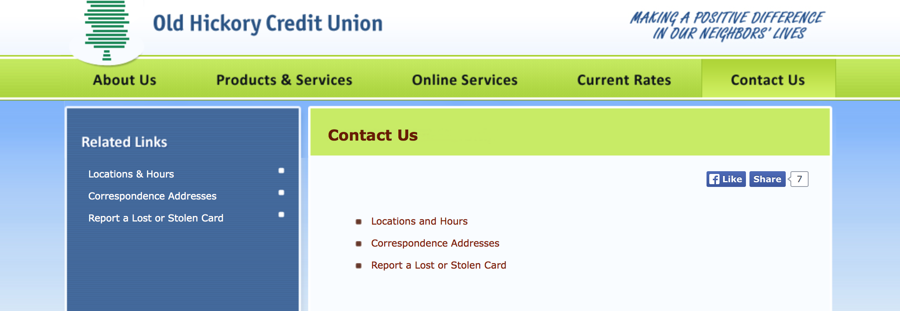

Contact
This contacts page comes from my bank. The users for this site are very specific to be sure. Only people
living in middle Tennessee who are looking for a new bank or users who are already members will use this site.
This is a local bank with only 12 branches in middle Tennessee.
The colors used are bright but relaxing,
they give the feeling of stability and comfort. Bright blues and greens represent energy and friendliness.
This page is found in the navigation bar at the top of the home page. One click brings the user here. The
user does not have to wade through pages of information to a phone number or branch location.
